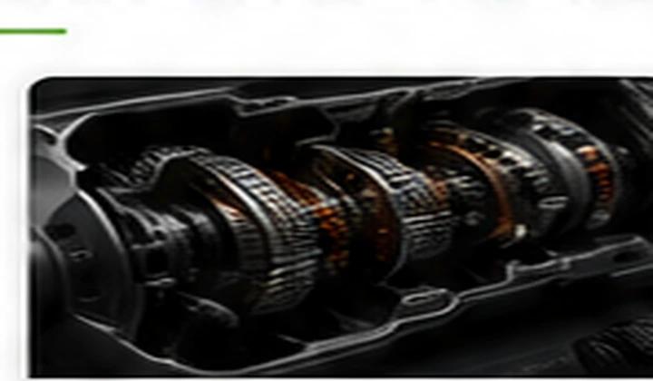

Common symptoms
- Harsh, late, or slipping shifts
- Won't shift, or stuck in one gear (limp mode)
- Transmission warning light or codes
- Shudder during torque converter lockup
- Delayed engagement into Drive or Reverse

Shift problems are not always internal transmission failures. Many shift concerns are caused by electronic controls, sensors, solenoids, or wiring. Oakline tests the command signals and control systems first — before anyone recommends an expensive transmission.
Oakline provides mobile testing at homes and workplaces throughout Fayetteville and nearby communities.
You get a test-based answer on whether the problem is electronic, hydraulic, or internal — and what should be repaired next.
Serving Fayetteville, Hope Mills, Raeford, Spring Lake, Stedman, Eastover and surrounding areas.